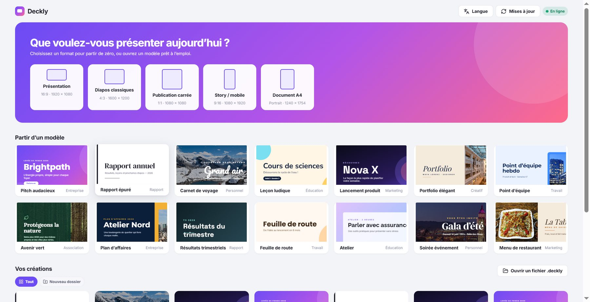
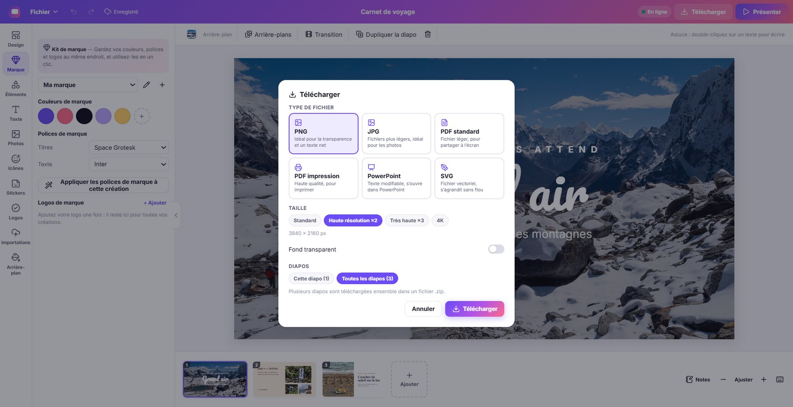
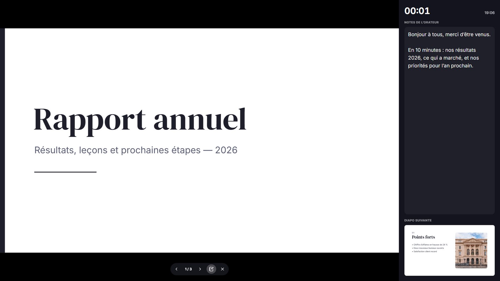

Fonctionnalités
Tout ce qu’il faut.
Tout ce qu’il faut.
Rien de compliqué.
Pensé pour ceux qui n’ont pas le temps d’apprendre un logiciel. Chaque bouton fait ce qu’il dit.
Glisser, déposer, c’est fait
Créez en quelques clics, pas en quelques heures
Partez d’un modèle, remplacez le texte, déposez une photo dans un cadre. Les guides d’alignement placent tout au bon endroit pour vous.
- 14 modèles prêts à l’emploi, en français
- Photos, icônes, stickers, formes, graphiques et tableaux
- Annuler, dupliquer, grouper : tous les gestes habituels

Kit de marque
Votre marque, appliquée en un clic
Enregistrez vos couleurs, vos polices et votre logo une fois pour toutes. Ils vous suivent dans chaque création, et vous pouvez avoir un kit par client.
- Plusieurs kits de marque
- Vos couleurs en premier dans chaque palette
- Importez vos propres polices

Export haute résolution
PowerPoint, PDF, PNG… jusqu’en 4K
Téléchargez votre présentation dans le format qu’il vous faut : PowerPoint avec le texte modifiable, PDF pour imprimer, images 4K, fond transparent, SVG.
- 6 formats, 4 tailles jusqu’à la 4K
- Toutes les diapos d’un coup, dans un .zip
- Redimensionnement magique : story, carré, A4…

Mode présentateur
Présentez comme un pro
Plein écran, transitions et animations. Vos notes, un chronomètre et la diapo suivante restent sous vos yeux, et le public ne voit que vos diapos.
- Notes de l’orateur pour chaque diapo
- Animations et transitions élégantes
- Flèches du clavier ou clic pour avancer
